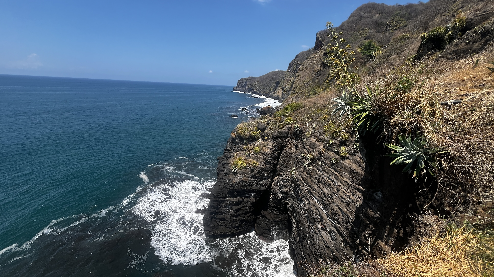
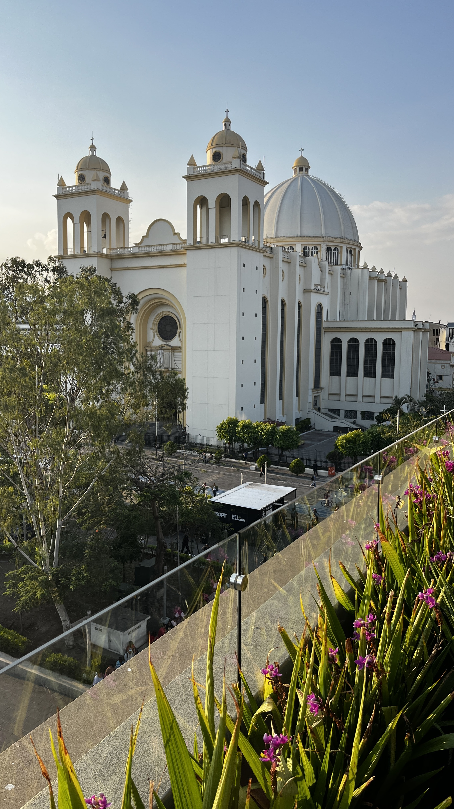
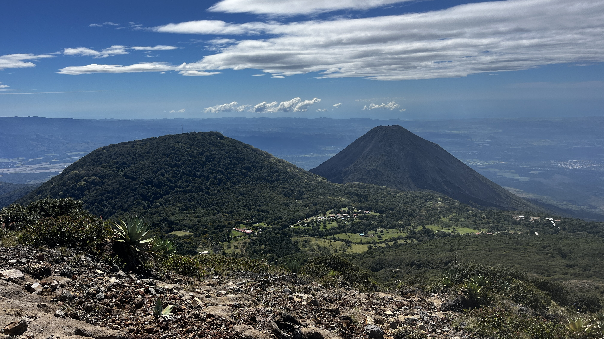
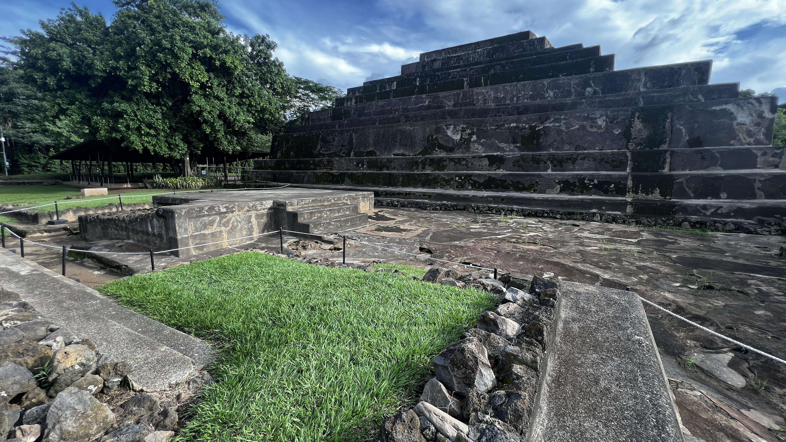
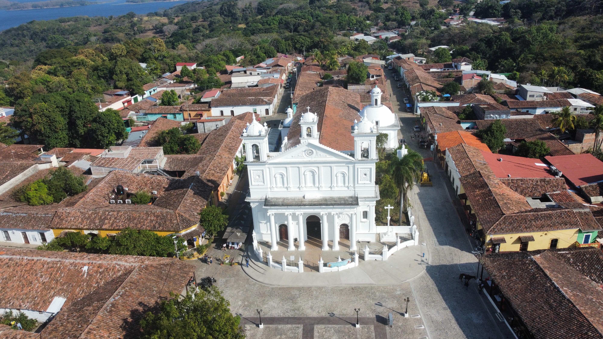

Cuatro formas de descubrir El Salvador
Playa, montaña, lago y ciudad: empieza por el paisaje que más te llama.
Descubre El Salvador
Explora el Catálogo de Tours
Playa, montaña, lago y ciudad: empieza por el paisaje que más te llama.

Viajeros de todo el mundo comparten cómo fue descubrir El Salvador de la mano de El Salvador Trails.

Una selección para empezar
Day Tours de un día y paquetes multi-día con recojo en hotel y guía certificado.
El Salvador en movimiento
Una referencia audiovisual para sentir el Pacífico antes de iniciar el recorrido.
Por MITUR El Salvador
Explora por estilo
Cuatro paisajes, cuatro ritmos para empezar a recorrer el país.



Historias del sendero
Tres referencias externas para recorrer paisajes distintos antes de elegir tu ruta.
Planifica tu viaje
Coordinamos lo esencial para que tú puedas concentrarte en el camino.
Ida y vuelta cómoda desde tu hotel.
Almuerzos locales y cata de café.
Mario te acompaña todo el recorrido.
Punto de encuentro claro con foto.
Así funciona
Un proceso directo, conversado contigo y sin pasos ocultos.
Revisa fotos, duración y lo que vivirás en cada ruta.
Indica fecha aproximada, grupo e idioma de preferencia.
Mario confirma contigo itinerario, recogida y precio.
Tu anfitrión en el camino
“Mi trabajo es ayudarte a entender cada lugar, no solo llevarte hasta él.”
Diseño cada recorrido para que conozcas el país con contexto, calma y atención directa.
Conoce mi historiaDudas comunes
Lo esencial para decidir tu recorrido con claridad.
Antes del viaje confirmamos contigo el recorrido, horario, punto de recogida y recomendaciones.
Sí, en San Salvador y zonas acordadas. El punto exacto lleva foto en cada tour.
La cotización se prepara según el recorrido, la fecha y la cantidad de viajeros.
Calzado con agarre, agua, bloqueador y chaqueta ligera. En cada tour encontrarás recomendaciones específicas.
Español, English y Português, según tu preferencia al cotizar.
El siguiente camino
Cuéntanos qué te gustaría conocer y armamos una ruta para tu grupo.